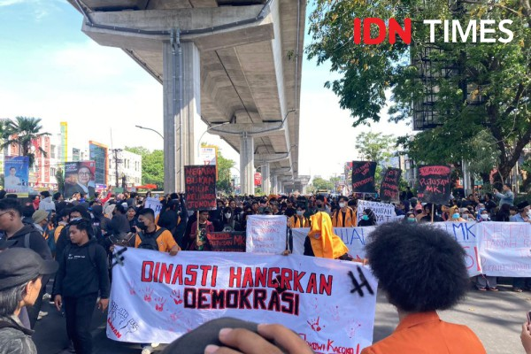

Pada tanggal 21 agustus 2024, yang dimana pada malam itu di seluruh sosial media saya muncul postingan sesuatu berlatarkan biru dengan garuda di tengan dan caption bertuliskan "DARURAT DEMOKRASI". Awalnya, saya hanya mendengar cerita dari teman-teman dan melihat postingan di media sosial tentang bagaimana kebijakan tertentu mulai mengikis nilai-nilai demokrasi yang seharusnya dijunjung tinggi. jujursaya tidak sepenuhnya paham apa yang terjadi, tetapi ada rasa resah yang muncul dalam diri ini. merasa bahwa ini bukan hanya tentang para politikus di atas sana, tetapi juga tentang kita, masyarakat biasa, termasuk saya sebagai mahasiswa muda dengan kedidak tahuan ini. Ketika memutuskan untuk ikut aksi turun ke jalan, itu menjadi pengalaman pertama saya dalam menyuarakan pendapat secara langsung. Perasaan sebelum aksi itu campur aduk—ada rasa gugup, takut, tapi juga semangat. Hari itu, saya banyak bertemu dengan berbagai kelompok mahasiswa, aktivis, dan masyarakat umum yang memiliki tujuan yang sama: mempertahankan demokrasi dan melawan ketidakadilan. Di sepanjang aksi, saya banyak melihat bendera, spanduk, dan orasi yang menggelora. Ada momen-momen ketika teman teman yang dijalan berteriak bersama, seolah-olah suara kami menyatu menjadi satu kekuatan besar. Satu hal yang sangat berkesan adalah solidaritas yang terbentuk di antara para demonstran. Meski saya baru pertama kali ikut aksi, rasanya seperti berada di tengah-tengah keluarga besar yang memiliki tujuan bersama. Kami berbaris dengan tertib, tetapi penuh semangat, menuntut pemerintah untuk mendengar aspirasi kami.
Momen ketika saya sendiri mulai menyadari pentingnya politik adalah saat seorang orator menyampaikan pidato penuh semangat tentang hak-hak kita sebagai warga negara yang dijamin oleh konstitusi. Dia menekankan bahwa kebebasan berbicara, kebebasan berpendapat, dan kebebasan berkumpul adalah fondasi dari demokrasi itu sendiri, dan jika kita tidak menjaga itu, demokrasi bisa hancur. Aksi itu membuka mata saya. Saya merasa memiliki tanggung jawab lebih dari sekadar belajar di kampus. Saya sadar bahwa peran mahasiswa bukan hanya sebagai penerima ilmu, tetapi juga sebagai penjaga nilai-nilai yang lebih besar, termasuk demokrasi. Pengalaman ini mengubah pandanganku terhadap politik dan membuatku lebih sadar akan pentingnya berpartisipasi aktif dalam kehidupan berbangsa dan bernegara.
| No | Mata Kuliah |
|---|---|
| 1 | Inovasi teknologi |
| 2 | Web Programan |
| 3 | Struktur Data |
| No | Nama Dosen |
|---|---|
| 1 | Dr. Ir. Yasdin, S.Pd., M.Pd., M.Sc., IPM |
| 2 | AlifyaNFH, S.Pd., M.Pd. |
